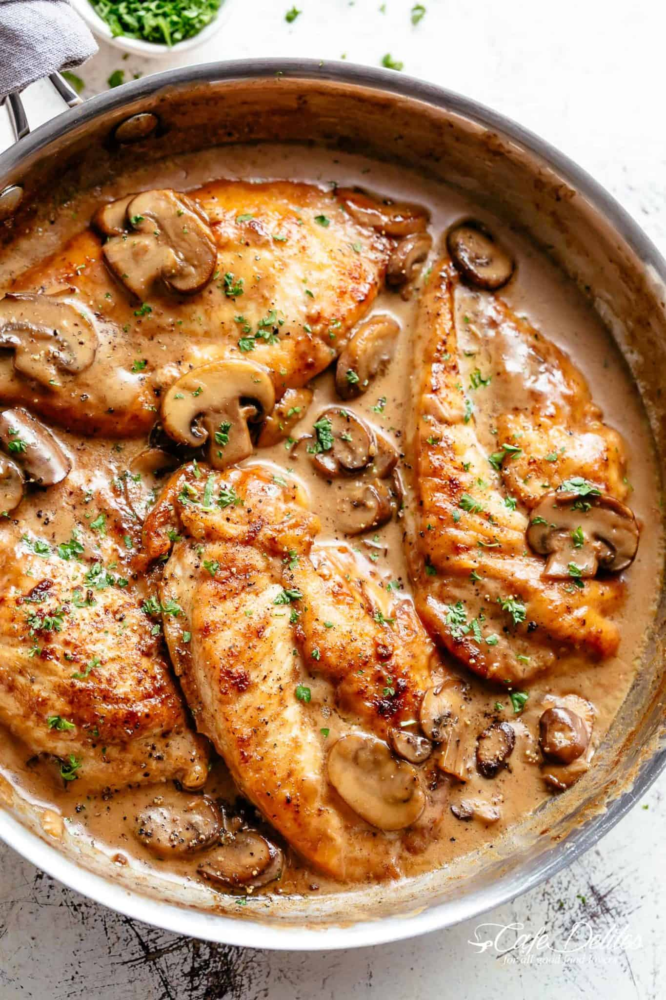

Chicken Marsala

Description
Being one of the most sought after dishes in restuarants, many people don't realize
how easy it is to make Chicken Marsala at home. Always serve it with extra sauce! This
recipe will be one that you reach for, on weekngihts or weekends.
Ingredients
- 1/2 cup all-purpose flour
- 1 teaspoon salt
- 1 teaspoon garlic powder
- 1/2 teaspoon black pepper
- 2 large boneless skinless chicken breasts
- 2 tablespoons olive oil
- 4 tablespoons unsalted butter
- 8 ounces Cremini mushrooms
- 5 cloves garlic
- 3/4 cup dry Marsala wine
- 1 1/4 cup chicken broth
- 3/4 cup heavy cream
- 2 tablespoons fresh chopped parsley
Steps
- Mix flour, salt, garlic powder and pepper in a shallow bowl.
Dredge the chicken in the flour mixture.
- Heat oil and butter in a 12-inch pan on medium heat. Fry chicken breasts.
- In the same pan, add more buttter and cook the mushrooms
- Add the garlic and cook until fragrant.
- Pour in the Marsala and the broth and simmer.
- Pour in the cream and return the chicken in to the sauce. Garnish with chopped parsley.
- Serve over cooked angel hair pasta.